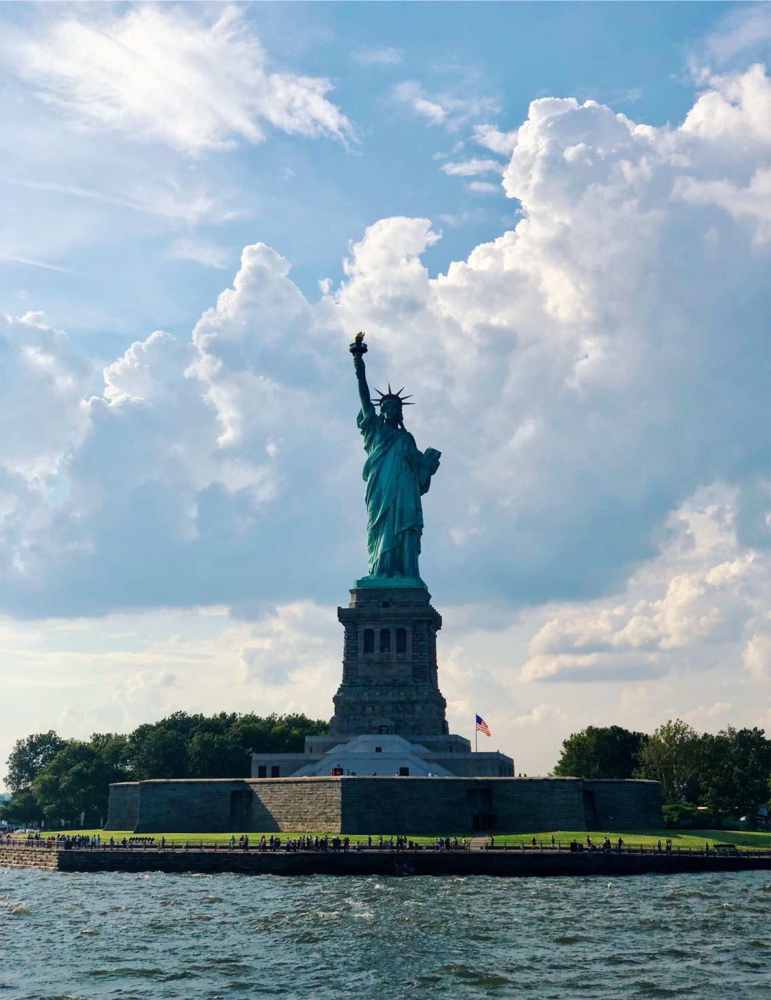
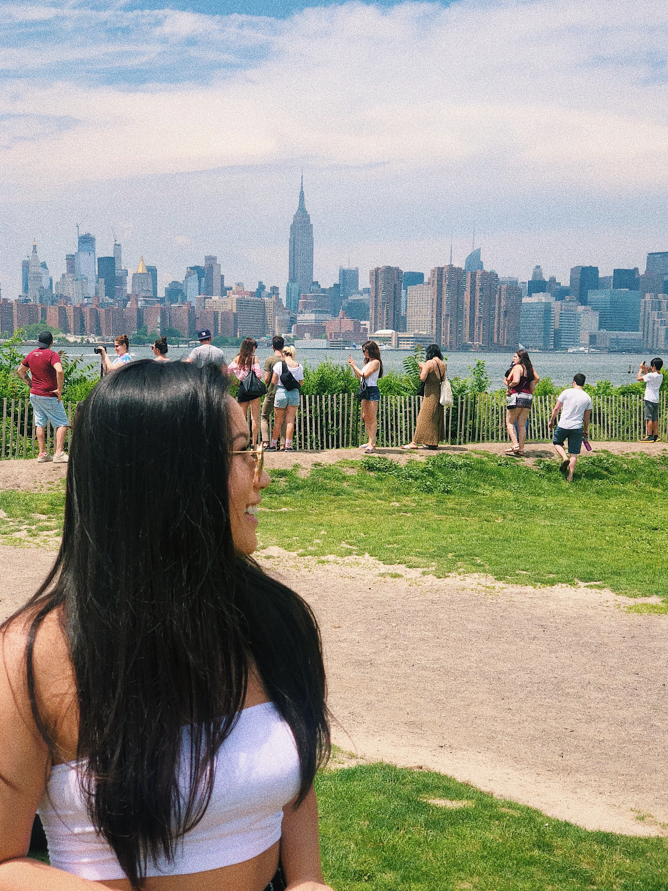
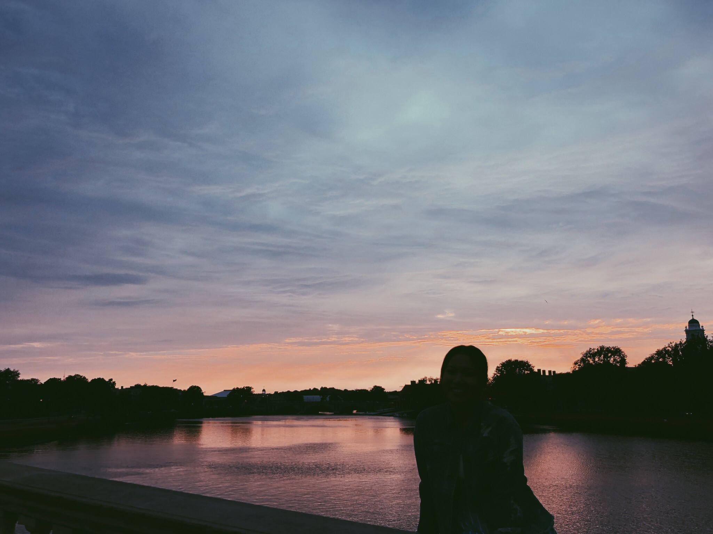
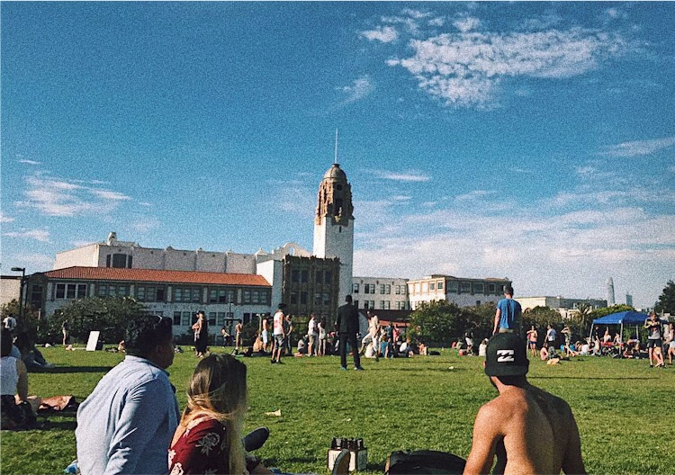
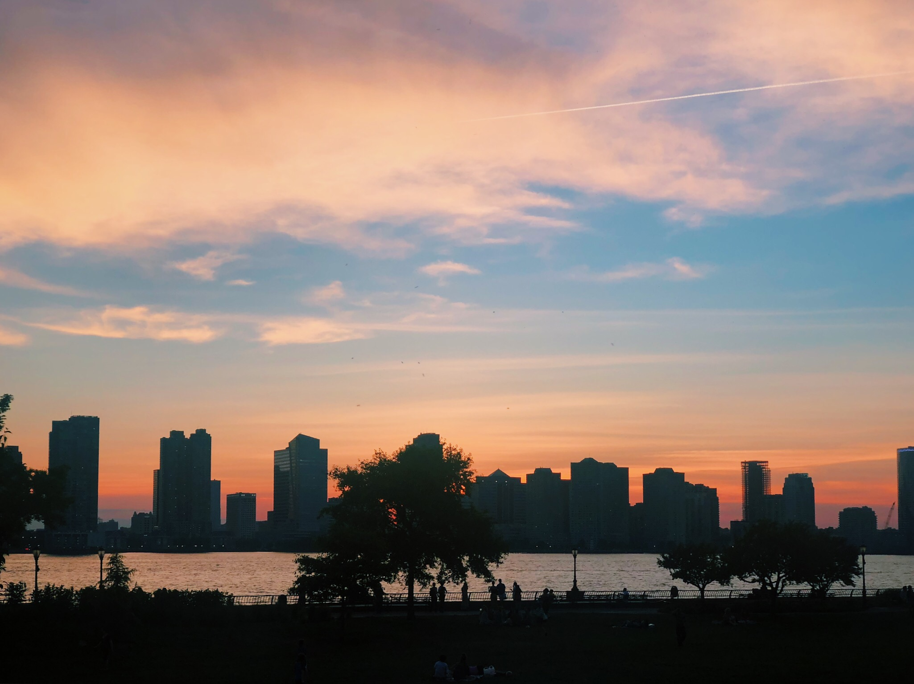

"Where are you headed?"
"Back home."
"Where's home?"
"Anywhere but here."
Dear New York, I hope you're doing well
We all have our defining moments. Whether we recognize it then at the time or later on down the line, these moments signify a turning point in our lives. It's in these particular moments that we learn something new about ourselves and subsequently change the way we think from then on out.
One of mine happens to be in the Uber driving to JFK after a lengthy three months living on the East Coast.
Recently, I spent the Summer of 2018 living in the East Village of New York City, something I'd always dreamed of doing. I was getting tired of California and was yearning for an adventure—a new place to wander, new people to meet, and a new opportunity to make a mark for myself in unexplored territory.
 Lady Liberty
Upon arriving in NYC, I stared out the window as my cab drove along the Williamsburg Bridge where I finally caught a glimpse of the Manhattan skyline. It was raining and the city, along with its people, looked depressed. Coupled with my taxi driver shouting on the phone the entire 50-minute drive, I attributed the unpleasant experience to an off day in the city. Oh well, tomorrow can only be better.
I was wrong. Having just gotten here, I needed to run a few errands and take care of some things to fully settle in. When I tried to call an Uber to Herald Square, it estimated that it'd take me 30 to 40 minutes to go a whopping 2 miles. Uh... okay. I guess I'll just take the subway. Not like that could be any worse.
Wrong again. Even though it was just raining the day before, it was 90 degrees this day. One step down those subway stairs into the underground platform and I sweat off all the makeup I had just put on. I entered into the packed train car and involuntarily signed myself up for a fully clothed orgy session. Finally, I gifted myself with some breathing space once I got out of that subway station and made my way into Target.
I have never seen a Target so packed with uncivilized people who both scowl at you for standing in their way yet also make full stops in the middle of an aisle only 5 feet wide (which I later found out was standard for any NYC establishment). If I wanted to throw myself into a ring of animals with manners dating back to our primitive barbarian days, I'd have gone to Walmart.
And then the lines. Oh god, the lines.
Remember when I was sitting in my taxi and staring out the window thinking to myself "Wow. I made it. I'm in New York City" thinking I was some special snowflake success story? Somehow, I forgot that 8.6 million other people also lived in this cesspool. And I'd run into them anywhere and everywhere I went.
You know how other languages sometimes have words that describe a very specific phenomenon that we don't have in our language? Maybe there's one for the days where everything seems to go wrong, almost as if the universe really has it out for you and has its final laugh when you drop your keys on the floor when trying to get into your apartment and put an end to this miserable day.
I'm just being dramatic. Or at least, at the time, I didn't think I was. I genuinely thought this was all just the makings of a really bad first day in NYC... until I lived the rest of my 90 days. The uber long Ubers, the bipolar weather, the packed subways, the very obviously violated fire marshal set room capacities—these were all common threads to any NYC day. Maybe California wasn't so bad after all.
 Williamsburg, New York
Silver Linings
I spent the rest of my time in NYC in constant frustration and longing for what I left behind on the West Coast. The first thing people ask you when you say you just moved to the city is "How are you liking it?" to which I'd reply "I don't." And let me tell you, nothing pisses off a New Yorker more than a new transplant who hates their hometown, especially when you tell them San Francisco is better.
I'll cut the city some slack though. It had its nice parts to it, like the fact that there was a Duane Reade or a bodega on every street corner for days I didn't want to endure the same misery I suffered through last time merely trying to go to Target. I often found myself in Bryant Park and chatting with strangers who would ask about the book I was reading, or laying down at Rockefeller Park and watching the sunset over the Jersey skyline and Hudson River. I even went to my first and only Broadway musical, The Spongebob Squarepants Musical! (It was nominated for 12 Tony Awards, mind you.)
For the weekends I wanted to get out of this hellhole, other states were just a simple bus ride away. I spent some time in Boston and went kayaking in the Charles River, touring Harvard University (which doesn't have much to it other than overpriced sweaters, to be honest), and buck-a-shucking happy hour dollar oysters. Another weekend, I visited a friend and his family in Maryland, where I learned that rich people really like colonial style houses that take up 1 out of the 50+ acres of land they own. At first, I thought the 3 mile long driveways were ridiculous, but really, you know you've made it when people still can't see your house even after pulling into your gate.
 Charles River, Cambridge Side
And soon enough, it was time to go back home to my beloved Golden State! Though it was a tough decision, I had left everything behind and moved to the other side of the country because I knew I'd come back a stronger, better person who has uncovered more of the world and learned more things about myself that I never would've known. But to be honest, at the end of my time here, I felt the same. Nothing about me changed, and I came back the same person. It was a disappointing revelation, but maybe I just never got the chance to have a defining moment while in New York.
Not until I started the 6 mile yet 50-minute drive back to JFK, at least. Watching the Manhattan skyline getting smaller and smaller in the back window was when I realized this was it. I wasn't ever going to live here ever again, as my parents are in their 60s and 70s back in California and I couldn't live with myself if I was stuck on the other side of the country when I get that phone call one day. I couldn't go far from home any time soon, and this three-month adventure was all I'd have. It's weird, missing a city that you're still physically located in, but I knew there were greater things to come, like being reunited with my friends and family and the oh so glorious city of San Francisco I'd been raving about for the past 3 months.
Except it didn't really happen that way. I arrived at SFO and was reminded of the evergrowing list of problems taking over San Francisco that I had somehow completely ejected out of my memory when telling everyone on the East Coast how much better it was on the other side.
The Grass is Always Greener
It wasn't even a full month since I'd settled back into California and I was already planning my next trip back to NYC. It's much easier to see how much greater things are on the other side when you have something worse to compare it to, such as San Francisco.
 Dolores Park, San Francisco
Now, what did this mean for me? Was I going to make the sacrifice and drop everything once again to move back to the East Coast? No. I knew that the minute I landed in NYC, I would be crying for the golden coast once again. It's almost pathetically predictable at this point, my everlasting desire for whatever I don't have.
Instead, I'd learn to think of each of these places as pieces of home for me. Amidst the so-called "trials and tribulations" (read: first world problems) I underwent in the Big Apple, these were the things that made the city unique—things that I couldn't find elsewhere and were distinct to New York City. Here are a few:
- It accepts everyone and rejects no one
- You're never too far from the water
- The night never ends as the city never sleeps
- A fine balance between leisure and ambition
- The sunsets on the skylines
When we first grow up, we always think of our hometowns as our home. As we get older, we start to explore more of the world and leave our marks in more and more places as we go. This summer, I left a piece of me on the East Coast. It was a piece of me that had a tough exterior and a stubborn attitude, but later on learned to accept differences and appreciate things for the way that they are. And when I left, in turn for this piece of me, I took a part of NYC with me.
And so this is my love letter to New York City. To the city that I swore I hated, the city I promised I'd never come back to, the city to be the first to make me cry out of frustration alone, thank you for everything. Thank you for teaching me that there are certain things I can't conquer, but I should learn to love and treasure them anyways. I love you, I miss you, and I will never forget you.
Yours forever,
Jenna-Kaelyn
 Rockefeller Park, New York